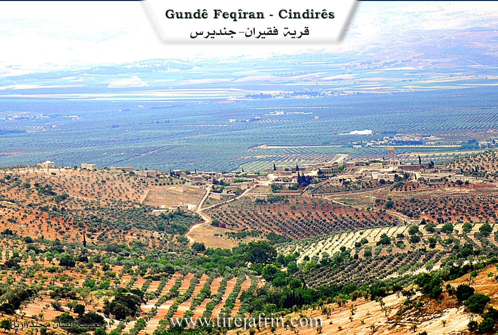
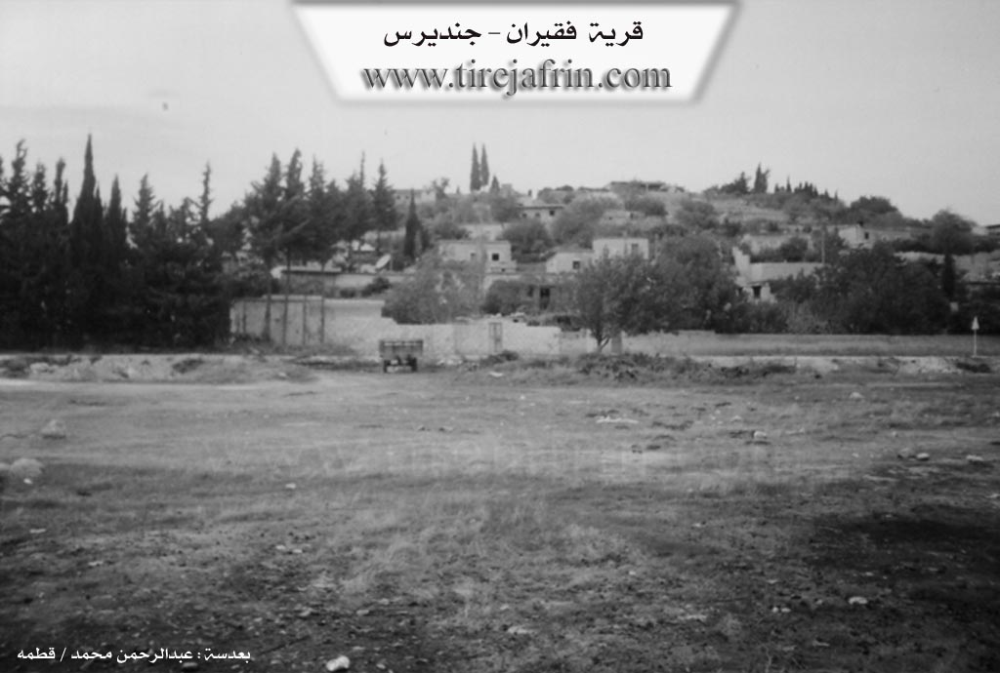

General Information
Nahiya (Subdistrict)
Cindires
Also Known As
Feqîra, Qara Bash, Ras al-Aswad, رأس الأسود, فقيران, قره باش, فقيرو
Tribes
Hekarî, Xaltî, Şerqî
Families, Clans, etc.
Elolo, Elî Lovî, Eybo Iskan, Nehwêfê, Ormexala, Pîr Mecîd, Pîr Şemo, Xwateyan, Êso, Îbo Îskanê, Îsa Bêzê, Îskano

Photos


Basic Information about Feqîra
Source: Ax û Welat
Etymology: Named after their ancestral village Feqîra in Bakurê Kurdistan
Foundation Date/Period: 320 years ago
Number of Caves: 50
Hills: Çiyayê Kurmênc, Çiyayê Lîlonê
Shrines: Tac û Hile, Şêx Cinêd, Pîr Seîd
Other Landmarks: Gêla Amkuy'a, Batman
Summaries
I. Summary from TirejAfrin Site (English) of Feqîra
Source: https://www.tirejafrin.com/site/kura%20afrin%20Cindires%20-%20faqire.htm
The following is stated in the book جبل الكرد (عفرين) دراسة جغرافية Çiyayê Kurmênc (Efrîn): A Geographical Study by د. محمد عبدو علي Dr. Mihemed Ebdo Elî regarding the village of Feqîran, Qerebaş, or Ra's al-Aswad: 1706 inhabitants, 475 hectares, 11 km from the center, 435 m altitude.
Feqîr is an Êzîdî religious title. As for Qerebaş, the Êzîdî people used to wear black headgear, so the Ottoman tax collector did not exert himself to distinguish them other than by naming them according to the headwear that characterized the inhabitants. The Arabized name Ra's al-Aswad is a translation of the Turkish designation. It is a large village on the southern slope of the Kûrk height, and its inhabitants follow the Êzîdî faith.
The following is stated in the book عفرين .... نهرها وروابيها الخضراء Efrîn... Her River and Her Green Hills by the writer عبدالرحمن محمد Ebdulrehman Mihemed from the village of Qetme:
Feqîran is a village in Çiyayê Kurmênc that follows the Cindirês subdistrict in the Efrîn region, Heleb province. It is a large village located on the southern slope of Çiyayê Sûtîn at the beginning of the flat lands extending south and east as far as the valley of the Efrîn river, which forms part of the Cindirês plain. Its soil is fertile alluvial clay, and it is located 11 km from the town of Cindirês towards the northeast.
It is bordered to the north by mountainous highlands planted with olive trees and grapevines, the nearby village of Kewkan at a distance of 500 meters, and Satiyan. To the south, it is bordered by an agriculturally fertile plain planted with olive trees, the Geliyê Sêlê (Sêlê valley), the shrine of Şêx Ebdulrehman, and the village of Şêx Ebdulrehman. To the west, it is bordered by Geliyê Sêlê, a mountainous height, and the village of Çolqa at a distance of 1 km. To the east, it is bordered by a wide and fertile plain planted with olive trees and grapevines and the village of Keferdelê Jêrîn.
The number of its houses reaches approximately 110 houses, and its age is about 400 years according to the statements of one of the elderly residents of the village. Its old houses are made of stone and mud with flat wooden roofs, while the modern ones are cement and extend towards the east and north. An electricity network is available, as well as a drinking water network derived from the Kewkan well located 200 meters to the western side of the village, which belongs to the state. There is a primary school in the village.
The village connects with the subdistrict center, the region, and neighboring villages via a paved road that passes through its center up to the Mabeta subdistrict. The village belongs to the Kewkan municipality. There is a modern olive press and a very old olive press in the village. Most of its inhabitants work in the cultivation of olives, grapevines, and grains, both rainfed and irrigated from artesian wells, as well as summer vegetables and fruit trees such as apricots, walnuts, and pomegranates, alongside raising sheep and goats. The religion of the village is entirely Êzîdî.
One of its most important families is Eybo Iskan, who were the first to inhabit the village from its founding until the present date. Among the holders of higher degrees in the village is Adil Merko, who holds a doctorate in nuclear physics from the Russian Federation.
Village Mukhtar: Azad Heso
Preparation and Execution:
Manager of Tirej Efrîn site: Ebdulrehman Hacî Osman
20/12/2013
Sources:
- Book: جبل الكرد (عفرين) دراسة جغرافية Çiyayê Kurmênc (Efrîn): A Geographical Study by د. محمد عبدو علي Dr. Mihemed Ebdo Elî.
- Book: عفرين .... نهرها وروابيها الخضراء Efrîn... Her River and Her Green Hills by عبدالرحمن محمد Ebdulrehman Mihemed from the village of Qetme.
II. Summary of Feqîra from Ax û Welat
Source: https://www.youtube.com/watch?v=mHDj-8bsPkk
The village of Feqîra, located in the Cindirês district of Efrîn, serves as a significant cultural and historical center for the Êzdî community in northwestern Syria. Established approximately 320 years ago, the village is not indigenous to its current location in terms of deep antiquity but was founded by migrants from Bakurê Kurdistan (Northern Kurdistan). The founder, Elî Lovî, led the settlement, and the villagers named their new home after their original village, Feqîra, located near Batman.
The oral history preserved by the elders describes a migration caused by violence and difficult circumstances in their homeland. When the ancestors of the current residents arrived, they were accompanied by other distinct groups from villages such as Çolaqa, Xerza, and Xalta, who also settled in the region. Today, the village maintains a distinct demographic character, described as a "lonely island" of Êzdî inhabitants surrounded by Muslim villages. The social structure is defined by ancient Êzdî tribal confederations, specifically the Xaltî and Hekarî tribes. Within the village, the religious caste system remains intact, containing all three spiritual classes: Pîr, Mirîd, and Şêx. Prominent lineages include the Ormexala family (serving as Pîrs) and the family of Îbo Îskanê, the late mukhtar whose home has guarded sacred relics for centuries.
Feqîra is geographically situated on a plateau (tebbaq) extending toward Çiyayê Kurmênc and Çiyayê Lîlonê. The landscape is marked by olive groves and historical remnants, including fifty caves and an ancient well dating back to the Roman era located at the front of the village. The residents also recall specific landmarks from their oral tradition, such as Gêla Amkuy'a, which served as a reference point for grazing flocks in the past.
The spiritual life of Feqîra revolves around two primary sacred sites. The first is the Tac û Hile, a holy object, described as the "garment of Sultan Êzî", kept within the private home of the Îbo Îskanê family. This relic is brought out annually during religious festivals for sacrifice and veneration. The second major site is the shrine of Şêx Cinêd, also historically identified by some as Pîr Seîd or Şêx Seîd. Şêx Cinêd is remembered as a humble, ascetic figure from the Şêx Hesenî lineage who possessed miraculous powers (keramet), such as handling fire and flying with doves.
The village is renowned for its vibrant celebration of Çarşema Sor (Red Wednesday), the Êzdî New Year. During this festival, the community engages in deep symbolic rituals, such as coloring eggs to represent the spherical earth and the sun (Şêx Şems), and decorating households with red April flowers. The event draws Êzdî people from across the Efrîn canton to the village square, reinforcing Feqîra's status as a custodian of Êzdî identity, peace, and historical memory in the region.
II. Summary of Feqîra from Multi Channel
The documentary offers an extensive look at the village of Feqîran, situated in the Efrîn region on the slopes of Deşta Cûmê. Historically, the village was also referred to by the Turkish name Qerebaş, which translates to Black Head. The current inhabitants, who belong to the Êzîdî faith, settled the area approximately 400 years ago. However, the location has a much deeper history, as evidenced by Roman ruins, clay aqueducts, and an ancient well dating back over 2000 years. When the ancestors of the present day community first arrived, they took shelter in a network of connected caves before eventually constructing above ground stone houses.
The Êzîdî residents of Feqîran trace their origins to earlier migrations from eastern regions, including Tirkiyê and Cizîrê. During the Ottoman era, they crossed open borders in search of water and pasture for their flocks. Over time, they transitioned from nomadic pastoralism to settled agriculture, initially planting vineyards and later establishing olive groves which have been cultivated for about 200 years. The villagers belong to the Şerqî tribe. The very first household to settle in the village was the Elolo family. They were subsequently followed by the Êso family, who then brought their relatives, the Îskano family, to live beside them. The residents maintain strong familial connections in Mearatê and Cizîrê. Elders proudly recount a long history of peaceful coexistence and deep mutual respect with neighboring Sunni Kurdish and Arab communities in surrounding villages such as Corqan, Colaqan, Kefer Delê, and Satiyan.
Today, Feqîran has a population of around 700 original residents, though a significant number of youths have migrated to Ewropa for education and better opportunities. The community has also taken in displaced Arab families from Xan Tûman, Hims, and Dera, who work collaboratively with locals as agricultural partners. They cultivate seasonal crops like lettuce, lentils, and black cumin. The local economy is anchored by olive farming, a historic olive press, and the sale of olive wood. Despite its small size, the village sustains a carpentry workshop run by a displaced artisan, providing custom woodwork to clients throughout Efrîn.
The village features notable local sites, including a massive oak tree where children have played for generations, and ancient basalt basins at the highest elevation which once served as a sacred local Ziyaret for blessings. The documentary also explores the Êzîdî theology of the villagers, a monotheistic faith tracing back to Şîs, the son of Adem. They deeply revere Tawisê Melek as the supreme angel who refused to bow to anyone but the Creator. While their ultimate holy site is the Laliş sanctuary and the sacred Zemzem or Kaniya Sipî spring in the Şengal region of Îraq, the people of Feqîran preserve their unique local traditions, including praying toward the sun as the ultimate symbol of divine light and life on earth.
II. Summary of Feqîra from Multi Channel 2
The documentary explores Feqîra, a village situated in the Cûmê plain within the Cindirêsê district of the Efrîn region. The village has a rich history dating back to the 1750s. Elder Evdirehman Heso explains the fascinating evolution of the village name. Originally, it was known as Baterkiyê during the Ottoman era. Later, when a Turkish census committee visited, they noticed the local elders wearing black headgear. Consequently, the committee named the village Qerabaş, which translates to black head. Authorities subsequently translated this name into Arabic as Ras el Eswed. However, the local people referred to their home as Feqîran or Feqîra because they considered themselves poor and lived a modest life.
The establishment of the village involved significant migration and land purchases. Husên Brahîm migrated from Şêx Bekir to the area. At that time, a neighboring settlement belonging to the Xwateyan family already existed. Guided by a friend from the Îsa Bêzê family, the newcomers purchased the village lands for six hundred and twenty five gold coins. In the early days, the inhabitants lived in the numerous natural caves dotting the landscape. It was not until 1956 that the first concrete room was constructed, marking the beginning of modern structural development in the village.
The documentary highlights the distinct Êzîdî religious structure of the village. The society is organized into strict religious castes comprising Şêx, Pîr, and mirids. Specific religious lineages mentioned include Şêx Hesenî, Şêx Ebûbekirî, and Şêx Mendî, alongside the Pîrê Omerxala lineage. The community practices strict endogamy, meaning a Şêx must marry within the Şêx caste, and a Pîr must marry within the Pîr caste, with marriage to mirids strictly forbidden. They also observe specific dietary laws, such as the prohibition of pork.
Historically, the villagers relied heavily on traditional agriculture and animal husbandry, utilizing animals for plowing before the introduction of tractors. For education, children had to walk to the neighboring village of Çolaxa or travel to Terendê. Today, Feqîra is entirely dependent on olive cultivation. The village is home to a modern olive press managed by Mîro and Luqman Heso Xelef, serving local farmers and surrounding villages like Kaxrê, Şîtkê, and Satiyê. However, severe drought has devastated the region. The Qenetê spring, which once provided abundant water, has completely dried up. Residents such as Nebî Minla Eynat and the shepherdess Îsmaîl lament that without rainfall and facing exorbitant costs for resources, both olive farming and livestock rearing have become economically unsustainable, threatening the survival of their traditional agricultural lifestyle.
Transcriptions and Subtitles
| Source | Video | Subtitles | Transcript |
|---|---|---|---|
| Ax û Welat 1 | Watch Video | Download SRT | View Transcript |
| Multi Channel 1 | Watch Video | Download SRT | View Transcript |
| Multi Channel 2 | Watch Video | Download SRT | View Transcript |
Foundation/Origin Information of Feqîra
The Aybo Iskan family were the first to settle in the village, since its establishment.
Source: TirejAfrin Site
Founded by a migrant named Xalil from North Kurdistan.
Source: Ax û Walat Transcript
Possible Village Name Meaning of Feqîra
"Faqir (فقير): is a religious Yazidi title." The name "Qara Bash" (قره باش) was given by an Ottoman tax collector because the Yazidi inhabitants wore black headdresses. The Arabized name, Ras al-Aswad, is a translation of the Turkish name.
Source: TirejAfrin Site
The name was carried over from a village in North Kurdistan, a common practice among Yazidi communities before modern borders were established.
Source: Ax û Walat Transcript
V. Links
- Tirej Afrin:
https://www.tirejafrin.com/site/kura%20afrin%20Cindires%20-%20faqire.htm - Ax û Welat:
https://www.youtube.com/watch?v=-yMPXbxqKl8 - Jawlat:
https://www.youtube.com/watch?v=kz0_UCIf40E - Drone video:
https://www.youtube.com/watch?v=BLrxsFTruDY - Local FB page:
https://www.facebook.com/profile.php?id=100064542648225 - Video:
https://www.youtube.com/watch?v=XFRAbrGxGIk - Ax û Welat:
https://www.youtube.com/watch?v=mHDj-8bsPkk - Multi Channel:
https://youtu.be/GAS6RltoDd4?si=R-B44oAPFLgQkItx